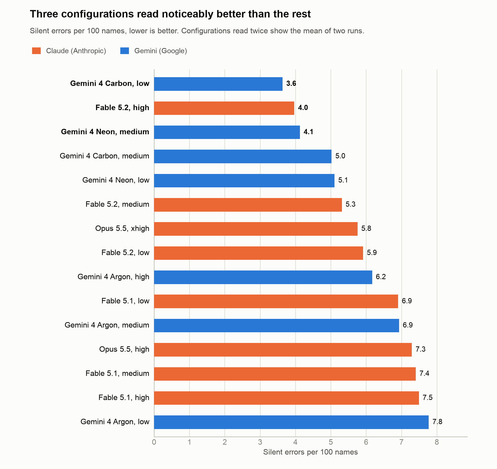
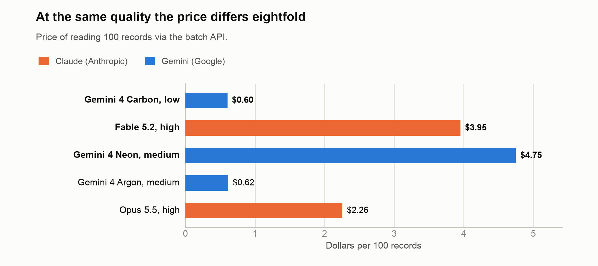
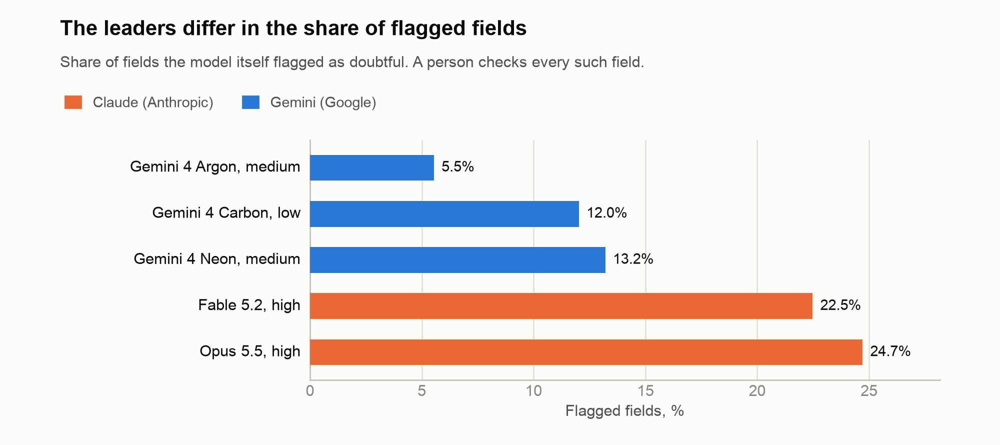
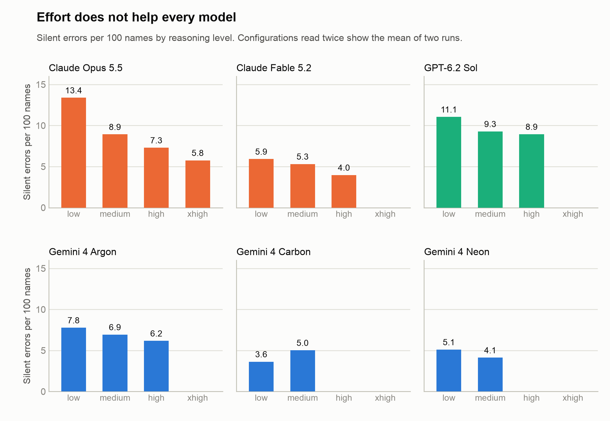
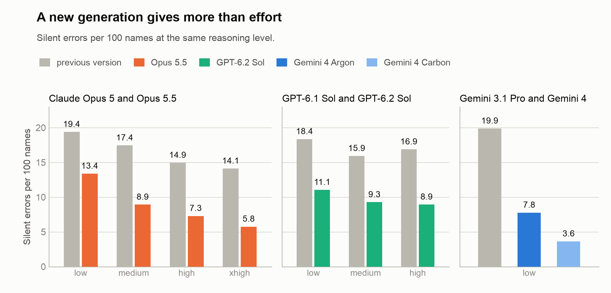

Which model reads old Russian records best: a test of LLM configurations on 18th-19th century handwriting

This article answers one question: which LLM reads old Russian handwritten documents best. I measured how the leading models perform on a specially selected set of records and compared them by the number of reading errors and by cost. The best result came from Gemini 4 Carbon at low effort: it leaves as few unnoticed reading errors as Claude Fable 5.2 and Gemini 4 Neon, and costs six to eight times less.
Why this matters
Ever since LLMs became widely available, people who do genealogy have been trying to use them to read old documents. The dream of a machine that quickly reads hundreds of pages written in a difficult hand and an unfamiliar orthography, and then analyses them, has always been tempting. Early models did this poorly: either there were too many errors, or the model did not understand the structure of the document. As the models and the ways of using them improved, they became usable for reading old manuscripts. In my experience, starting roughly with Gemini 3 Pro the recognition reached an acceptable level, and it became possible to build an LLM into the reading workflow.
Today almost every leading model reads such documents and understands their structure. The question is no longer whether an LLM can be used to read parish registers, but which model to take and what it costs.
How this measurement differs from others
There are already several comparisons of LLMs on historical manuscripts, but almost all of them are in English and other Western European languages, and they measure the character error rate (CER). Examples are the paper by Mark Humphries and colleagues, his blog and the work by Crosilla and co-authors. On Russian material there is a paper on printed books of the 18th century and an article by Yandex (in Russian) about their own system for parish registers.
I did not find an open comparison of general-purpose models on Russian parish registers (metric books) and revision lists (the tax censuses of the Russian Empire). I also needed a metric more detailed than CER: one that shows which errors in names the model itself flagged as doubtful and which it let through silently. For genealogy this is what matters, so I decided to measure everything myself.
What was measured and how
A few words about the method. I selected records from my own collection of documents: four parishes, five archives, the years 1788-1886. There are 167 records in total: 50 births, 35 marriages, 35 deaths and 47 households from revision lists and confession lists. They contain 993 people. Some of the records I once indexed by hand. The rest had already been read by Claude agents straight from the scans. Before the test I proofread all 167 against the scan to make sure the reference is correct.
The quality of the images in the set varies a lot. About half of the set comes from the archives' online reading rooms, these are scans. The rest are photographs, some of them taken from a monitor screen, with moire.
The model reads a cropped frame of one record. Together with the frame it gets a general instruction: write as in the source, in the pre-reform orthography, change only the grammatical case, do not guess what is illegible and put "?" instead, list doubtful fields separately, return the answer as JSON.
Here is how it looks on one birth record of 1874. The frame the model receives:

And the answer of Gemini 4 Carbon at low effort. I removed the empty fields and the place of residence to keep the example short:
{
"record": {"record_num": "71", "gender": "male", "b_day": "17", "k_day": "18"},
"persons": [
{"slot": "child", "name": "Сергѣй"},
{"slot": "father", "name": "Ананія", "patronymic": "Ефимовъ", "status": "крестьянин"},
{"slot": "mother", "name": "Надежда", "patronymic": "Ѳокина", "status": "жена крестьянина"},
{"slot": "godparent", "name": "Романъ", "patronymic": "Андрѣевъ", "status": "крестьянин"},
{"slot": "godparent", "name": "Марѳа", "patronymic": "Иванова", "status": "крестьянская женка"},
{"slot": "priest", "name": "Павелъ", "surname": "Орловъ", "status": "священник"}
],
"doubtful": ["persons[5].surname"]
}
The names in this record are read correctly. In the last line the model itself flagged one field as doubtful: the priest's surname.
At the end a script scores the answer, there is no LLM judge. Running it again on the same answers gives the same numbers. The script compares what was read with the reference. Small differences in spelling are forgiven: Сергѣевъ and Сергеев (Sergeyev) count as the same reading, Димитрій and Дмитрій (Dimitry and Dmitry), Дарья and Дарія (Darya) count as variants of one name. A reading error is getting a different name.
The following metrics are computed from the reading. Errors are counted per 100 name fields: given name, patronymic and surname. The set has about 1,700 such fields.
- Silent errors: a wrong name that the model did not flag. This is the main number. Such an error can only be found by proofreading everything by hand. For example, one of the models read the godmother in the record above as Марія (Maria), although the record says Марфа (Marfa), and did not mark any doubt.
- Flagged fields: the share of fields the model itself marked as doubtful. Every flag costs a person time to check, so a model that plays it safe and flags everything saves no work. For example, in the same record above the model doubted the priest's surname, although it read it correctly.
- All errors: wrong names, flagged or not.
- Price: what it costs to read 100 records.
This test does not measure character-by-character recognition of the document. It measures only whether given names, patronymics and surnames are read correctly, and whether the model notices its own uncertain readings.
I also computed the character error rate (CER), as other studies do, on the same answers, and it ranks the models almost identically. But it does not tell could not read it and left "?" from read it wrong and said nothing. CER also conveys the cost of an error poorly. More than a quarter of the wrong names differ from the right ones by one or two letters: Марья (Marya) and Марѳа (Marfa). In letters this is a trifle, but it is a different person.
The confidence intervals are computed by resampling the records (bootstrap). The model reads the set once, and then 167 records are drawn at random with replacement from its finished answers many times, and the errors are recounted on each sample. The interval shows how much the result depends on the composition of the set. It does not account for the spread between runs of the same model, which I measured separately. On my set, with one run per configuration, a difference of about 2.5 errors per 100 names can be detected. Smaller differences were treated as noise.
Results: models and effort
So far I have tested 52 configurations. Below is the top of the table, sorted by silent errors. The full table is on a separate page.
For the price I used the cheapest price available for each model (for example, through the batch API). The prices are those of November. From 1 December Google doubles the prices of Gemini 4 Argon and Carbon, and from 1 January of Gemini 3.8 Flash as well.
| # | Model | effort | Silent errors | All errors | Flagged fields | $ per 100 records |
|---|---|---|---|---|---|---|
| 1 | Gemini 4 Carbon | low | 3.6 | 10.7 | 12.0% | 0.60 |
| 2 | Claude Fable 5.2 | high | 4.0 | 15.0 | 22.5% | 3.95 |
| 3 | Gemini 4 Neon | medium | 4.1 | 11.5 | 13.2% | 4.75 |
| 4 | Gemini 4 Carbon | medium | 5.0 | 10.6 | 9.8% | 3.60 |
| 5 | Gemini 4 Neon | low | 5.1 | 11.5 | 10.6% | 1.94 |
| 6 | Claude Fable 5.2 | medium | 5.3 | 18.7 | 25.9% | 2.24 |
| 7 | Claude Opus 5.5 | xhigh | 5.8 | 19.1 | 25.3% | 3.77 |
| 8 | Claude Fable 5.2 | low | 5.9 | 19.1 | 25.1% | 2.22 |
| 9 | Gemini 4 Argon | high | 6.2 | 10.5 | 6.9% | 3.07 |
| 10 | Claude Fable 5.1 | low | 6.9 | 20.7 | 22.4% | 4.06 |
| 11 | Gemini 4 Argon | medium | 6.9 | 11.3 | 5.5% | 0.62 |
| 12 | Claude Opus 5.5 | high | 7.3 | 21.4 | 24.7% | 2.26 |
| 13 | Claude Fable 5.1 | medium | 7.4 | 19.6 | 18.6% | 5.26 |
| 14 | Claude Fable 5.1 | high | 7.5 | 19.4 | 18.0% | 5.86 |
| 15 | Gemini 4 Argon | low | 7.8 | 12.2 | 5.4% | 0.58 |
What follows from all this?
1. Three configurations read noticeably better than the rest. Gemini 4 Carbon at low, Claude Fable 5.2 at high and Gemini 4 Neon at medium leave 3.6-4.1 silent errors per 100 names. The next group leaves 5-8: Carbon medium, Neon low, Fable 5.2 low and medium, Opus 5.5 high and xhigh, Argon and Fable 5.1. Every configuration in the table was read twice, and the table shows the mean of the two runs. The three leaders hardly differ from one another.

2. At the same quality the price differs eightfold. Carbon low costs $0.60 per 100 records. Fable 5.2 high costs $3.95, Neon medium $4.75. From December Carbon will cost $1.20, and the gap will shrink to three or four times.

3. The leaders differ in the share of flagged fields. Argon flags 5-7% of the fields, Carbon and Neon 10-13%, Opus and Fable about a quarter. After Argon a person has the least to check. On the other hand, Argon medium leaves 3 more silent errors than Carbon low.

4. Effort does not help every model.
- With Opus 5.5 the quality grows with every level, but so does the price: from $1.18 to $3.77.
- With Fable 5.2, low and medium do not differ, and high is noticeably better than both.
- With GPT-6.2 Sol, high is not much better than medium.
- With Argon the difference between medium and high is within the noise, and high costs five times more.
- With Carbon, medium costs six times more and reads no better than low.
- With Neon, medium is a little better than low.
- GPT-6.1 Terra leaves the fewest silent errors with reasoning turned off, but then a third of the fields are flagged.
- With Sonnet effort changes little.

5. A new generation gives more than effort. The previous Opus 5, at the same price, leaves 6-9 more silent errors than Opus 5.5 at every effort level. Opus 5 at xhigh reads no better than Opus 5.5 at low: their difference is within the noise. The same holds for OpenAI. GPT-6.2 Sol, released in November, makes 8.9 silent errors at high against 16.9 for GPT-6.1 Sol, and costs half as much. And for Google: Gemini 3.1 Pro, the senior model of the previous generation, makes 20 silent errors at low, while Gemini 4 Argon and Carbon at the same level and for the same money make 8 and 4.

6. Price does not predict quality.
- Fable 5.1 costs 2-2.5 times more than Opus 5.5 high and reads the same.
- GPT-6.1 Sol makes 17 silent errors for $3.53.
- GPT-6.2 Astra medium at $3.24 reads no better than GPT-6.2 Sol medium at $0.94.
- Carbon medium at $3.60 makes 5.0 silent errors, Carbon low at $0.60 makes 3.6.
- Gemini 4 Hydrogen low at $0.79 makes 9 silent errors, two and a half times more than Carbon low at $0.60.
- Alibaba's flagship Qwen4 Max at high makes 21 silent errors, as many as Sonnet at low.
- Grok 4.7 makes 28. On the debug sample Grok was weak at every level, so I took only the cheapest one into the main run.
7. Small models are not fit for this task. Haiku makes 33-52 silent errors per 100 names, GPT-6 Luna 52-54. That is every second or third name.
Conclusion
What I would recommend for reading Russian manuscripts of the 19th century, based on my measurements:
- Take Gemini 4 Carbon at low. It leaves as few unnoticed errors as Fable 5.2 high and Neon medium, and those cost six to eight times more.
- If there should be fewer flags, take Argon medium.
- Among the Claude models take Fable 5.2 high or Opus 5.5 high. They flag four times as many fields as Argon and cost four to six times more.
- Do not pay for effort above low with Carbon or above medium with Argon: it will not get better.
- Do not use small models at all.
- Proofread in any case: the best configurations still leave 4-7 unnoticed errors per 100 names.
The test runs on ready-made frames of a single record, so in real conditions the results may be lower or higher. The set I ran the tests on comes from my corpus. Its records are stored as code in a DSL, and all the tools for it are collected in the verso library. The records of five villages from this corpus are in open repositories: Kirillovo, Zhuravkino, Dmitrievy Gory, Maryino and Nizhnyaya Vereya.